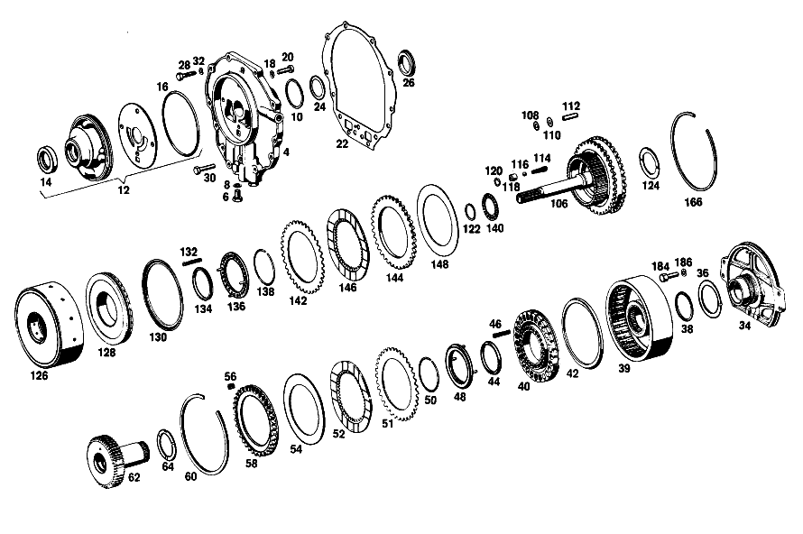

| № | Артикул | Название | Кол. | Примечание | Ограничение |
|---|---|---|---|---|---|
| 4 | A 112 270 07 05 | - КРЫШКА | 1 | [014] NO LONGER AVAILABLE | |
| 6 | A 112 997 05 30 | - ЗАГЛУШКА РЕЗЬБОВАЯ | 2 | [014] NO LONGER AVAILABLE | |
| 6 | A 112 997 05 30 | - ЗАГЛУШКА РЕЗЬБОВАЯ | 1 | [014] NO LONGER AVAILABLE | |
| 8 | N 007603 010404 | - Уплотнительное кольцо | 2 | ||
| 8 | N 007603 010404 | - Уплотнительное кольцо | 1 | ||
| 10 | A 100 272 01 55 | - Уплотнительное кольцо | 2 | ||
| 12 | A 112 270 14 90 | - КОРПУС | 1 | [014] NO LONGER AVAILABLE | |
| 14 | A 008 997 91 46 | - Уплотнительное кольцо | 1 | ||
| 16 | A 004 997 05 48 | - Уплотнительное кольцо | 1 | ||
| 18 | N 000137 008100 | - Пружинная шайба | 4 | ||
| 18 | N 000137 008212 | - Пружинная шайба | 4 | ||
| 20 | N 006912 008000 | - Винт | 1 | ||
| 20 | A 094 990 43 08 | - Винт | 1 | M8X25\-8.8 [402] БОЛЬШЕ НЕ ПОСТАВЛЯЕТСЯ | |
| 20 | N 000933 008153 | - Винт | - | M8X25\-8.8 | |
| 20 | N 304017 008034 | - Винт с 6-гранной головкой | 3 | M8X25 | |
| 22 | A 112 271 04 80 | - ПРОКЛАДКА УПЛОТНИТЕЛЬНАЯ | - | ||
| 22 | A 112 271 13 80 | - уплотнение | 1 | ||
| 24 | A 112 271 00 52 | - РАСПОРНАЯ ШАЙБА | NB | 0.1 MM [014] NO LONGER AVAILABLE | |
| 24 | A 112 271 01 52 | - РАСПОРНАЯ ШАЙБА | - | 0.2 MM | |
| 24 | A 112 271 00 52 | - РАСПОРНАЯ ШАЙБА | NB | 0.1 MM [014] NO LONGER AVAILABLE | |
| 24 | A 112 271 02 52 | - РАСПОРНАЯ ШАЙБА | NB | 0.5mm [014] NO LONGER AVAILABLE | |
| 26 | A 112 271 00 62 | - Прижимная шайба | 1 | ||
| 28 | N 000933 007019 | - Винт | 10 | ||
| 30 | N 000933 007020 | - Винт | 3 | ||
| 32 | N 000137 007201 | - Пружинная шайба | 13 | ||
| 34 | A 112 270 03 20 | - ФЛАНЕЦ | 1 | ||
| 36 | A 112 272 07 62 | - Диск | 2 | ||
| 38 | A 100 272 01 55 | - Уплотнительное кольцо | 4 | ||
| 39 | A 112 270 34 20 | - ФЛАНЕЦ | 1 | ||
| 40 | A 112 272 23 31 | - ПОРШЕНЬ | 1 | ПЕРЕДАЧА ЗАДНЕГО ХОДА [014] NO LONGER AVAILABLE | |
| 42 | A 115 272 12 92 | - МАНЖЕТА | - | [414] СТАРУЮ ДЕТАЛЬ УСТАНАВЛИВАТЬ БОЛЬШЕ НЕ РАЗРЕШАЕТСЯ | |
| 42 | A 316 272 07 92 | - Манжета | 1 | ||
| 44 | A 115 272 14 92 | - Уплотнительное кольцо | 1 | ||
| 46 | A 112 993 50 01 | - пружина | 28 | ||
| 46 | A 112 993 08 02 | - ПРУЖИНА | 28 | ||
| 48 | A 112 272 07 64 | - ТАРЕЛКА ПРУЖИНЫ КЛАПАНА | 1 | ||
| 50 | A 112 994 00 35 | - Пруж. стопорное кольцо | 1 | ||
| 51 | A 109 272 15 26 | - Диск | 3 | ||
| 52 | A 112 272 02 25 | - Диск | 2 | ||
| 54 | A 112 272 14 62 | - Диск | 1 | ||
| 56 | A 112 993 48 01 | - ПРУЖИНА | 36 | [014] NO LONGER AVAILABLE | |
| 58 | A 112 272 31 62 | - УПОРНАЯ ШАЙБА | 1 | ||
| 58 | A 112 272 33 62 | - УПОРНАЯ ШАЙБА | 1 | ||
| 60 | A 112 272 01 73 | - Кольцо | 1 | ||
| 62 | A 112 270 03 25 | - ПРИВОДНОЙ ВАЛ | 1 | [014] NO LONGER AVAILABLE | |
| 62 | A 112 270 29 25 | - Вал | 1 | ||
| 64 | A 112 272 00 62 | - УПОРНАЯ ШАЙБА | 1 | [014] NO LONGER AVAILABLE | |
| 66 | A 112 270 37 20 | - ФЛАНЕЦ | 1 | [014] NO LONGER AVAILABLE | |
| 68 | A 112 272 26 31 | - ПОРШЕНЬ | 1 | [014] NO LONGER AVAILABLE | |
| 70 | A 112 272 11 92 | - Уплотнительное кольцо | 1 | ||
| 72 | A 115 272 14 92 | - Уплотнительное кольцо | 1 | ||
| 74 | A 112 993 31 02 | - Нажимная пружина | 21 | ||
| 76 | A 112 272 06 64 | - ТАРЕЛКА ПРУЖИНЫ КЛАПАНА | 1 | [014] NO LONGER AVAILABLE | |
| 78 | A 112 994 00 35 | - Пруж. стопорное кольцо | 1 | ||
| 80 | A 112 272 18 24 | - ОБОЙМА ФРИКЦ. ДИСКОВ | 1 | [014] NO LONGER AVAILABLE | |
| 82 | A 112 272 01 73 | - Кольцо | 1 | ||
| 84 | A 112 272 08 26 | - ФРИКЦ. ДИСК НАРУЖНЫЙ | - | ||
| 84 | A 112 272 07 26 | - Диск | 1 | ||
| 86 | A 112 272 02 25 | - Диск | 2 | ||
| 88 | A 109 272 15 26 | - Диск | 1 | ||
| 88 | A 109 272 15 26 | - Диск | 1 | ||
| 88 | A 109 272 18 26 | - Диск | 1 | ||
| 90 | A 112 272 11 26 | - Диск | 1 | ||
| 92 | A 112 272 14 62 | - Диск | 1 | ||
| 94 | A 112 272 00 73 | - Кольцо | 1 | ||
| 96 | A 112 994 00 39 | - КОЛЬЦО ПРОВОЛОЧНОЕ | 1 | ||
| 98 | A 112 272 00 52 | - Компенсационная шайба | 1 | ПО НЕОБХОДИМОСТИ 0.5mm | |
| 98 | A 112 272 01 52 | - РАСПОРНАЯ ШАЙБА | 1 | ПО НЕОБХОДИМОСТИ 0.7 MM | |
| 98 | A 112 272 02 52 | - РАСПОРНАЯ ШАЙБА | - | ||
| 98 | A 112 272 00 52 | - Компенсационная шайба | 1 | ПО НЕОБХОДИМОСТИ 1.0 MM | |
| 98 | A 112 272 10 52 | - РАСПОРНАЯ ШАЙБА | 1 | ПО НЕОБХОДИМОСТИ 0.1 MM [014] NO LONGER AVAILABLE | |
| 102 | N 900055 040301 | - Стопорное кольцо | 1 | ||
| 104 | A 112 270 30 25 | - ПРИВОДНОЙ ВАЛ | 1 | [014] NO LONGER AVAILABLE | |
| 106 | A 112 270 16 43 | - ВОДИЛО ПЛАНЕТ. ПЕРЕДАЧИ | 1 | FRONT PLANETARY GEAR TRAIN [014] NO LONGER AVAILABLE | |
| 108 | A 112 272 37 62 | - УПОРНАЯ ШАЙБА | 6 | [014] NO LONGER AVAILABLE | |
| 110 | A 112 272 35 62 | - УПОРНАЯ ШАЙБА | 6 | [014] NO LONGER AVAILABLE | |
| 112 | A 112 272 00 74 | - БОЛТ | 3 | [014] NO LONGER AVAILABLE | |
| 114 | A 112 993 00 05 | - ПРУЖИНА | 1 | [014] NO LONGER AVAILABLE | |
| 116 | N 005401 307000 | - Шар | 1 | 7 MM | |
| 118 | A 112 272 00 67 | - КОЛЬЦО | 1 | [014] NO LONGER AVAILABLE | |
| 120 | N 000472 012000 | - Стопорное кольцо | 1 | ||
| 122 | A 307 272 02 55 | - Уплотнительное кольцо | 1 | ||
| 124 | A 112 272 00 62 | - УПОРНАЯ ШАЙБА | 1 | [014] NO LONGER AVAILABLE | |
| 126 | A 112 270 39 20 | - ФЛАНЕЦ | 1 | [014] NO LONGER AVAILABLE | |
| 128 | A 112 272 22 31 | - ПОРШЕНЬ | 1 | [014] NO LONGER AVAILABLE | |
| 130 | A 115 272 12 92 | - МАНЖЕТА | - | [414] СТАРУЮ ДЕТАЛЬ УСТАНАВЛИВАТЬ БОЛЬШЕ НЕ РАЗРЕШАЕТСЯ | |
| 130 | A 316 272 07 92 | - Манжета | 1 | ||
| 132 | A 112 993 31 02 | - Нажимная пружина | 28 | ||
| 134 | A 115 272 14 92 | - Уплотнительное кольцо | 1 | ||
| 136 | A 112 272 06 64 | - ТАРЕЛКА ПРУЖИНЫ КЛАПАНА | 1 | [014] NO LONGER AVAILABLE | |
| 138 | A 112 994 00 35 | - Пруж. стопорное кольцо | 1 | ||
| 140 | A 000 981 47 10 | - ПОДШИПНИК ИГОЛЬЧАТЫЙ | 1 | ||
| 142 | A 109 272 15 26 | - Диск | 2 | ||
| 144 | A 112 272 06 26 | - ФРИКЦ. ДИСК НАРУЖНЫЙ | - | ||
| 144 | A 112 272 11 26 | - Диск | 2 | ||
| 146 | A 112 272 02 25 | - Диск | 3 | ||
| 148 | A 112 272 14 62 | - Диск | 1 | ||
| 150 | A 112 270 17 43 | - ВОДИЛО ПЛАНЕТ. ПЕРЕДАЧИ | 1 | [014] NO LONGER AVAILABLE | |
| 152 | A 112 272 36 62 | - УПОРНАЯ ШАЙБА | 6 | [014] NO LONGER AVAILABLE | |
| 154 | A 112 272 38 62 | - УПОРНАЯ ШАЙБА | 6 | [014] NO LONGER AVAILABLE | |
| 156 | A 112 272 01 74 | - БОЛТ | 3 | [014] NO LONGER AVAILABLE | |
| 158 | A 115 272 02 73 | - Кольцо | 1 | ||
| 160 | A 112 994 07 35 | - Пруж. стопорное кольцо | 1 | ||
| 162 | A 000 981 99 10 | - ПОДШИПНИК ИГОЛЬЧАТЫЙ | 1 | ||
| 164 | A 000 981 48 10 | - ПОДШИПНИК ИГОЛЬЧАТЫЙ | 1 | [014] NO LONGER AVAILABLE | |
| 166 | A 112 272 01 73 | - Кольцо | 1 | ||
| 168 | A 100 981 00 10 | - Игольчатый подшипник | 1 | [402] БОЛЬШЕ НЕ ПОСТАВЛЯЕТСЯ | |
| 170 | A 000 272 10 62 | - УПОРНАЯ ШАЙБА | 1 | [014] NO LONGER AVAILABLE | |
| 172 | A 100 272 01 52 | - РАСПОРНАЯ ШАЙБА | 1 | ПО НЕОБХОДИМОСТИ 0.1 MM | |
| 172 | A 100 272 02 52 | - РАСПОРНАЯ ШАЙБА | 1 | ПО НЕОБХОДИМОСТИ 0.2 MM | |
| 174 | A 112 272 19 62 | - УПОРНАЯ ШАЙБА | 1 | [014] NO LONGER AVAILABLE | |
| 176 | N 000625 506207 | - Шарикоподшипник | 1 | ||
| 178 | A 112 272 09 52 | - Компенсационная шайба | 1 | ||
| 180 | A 112 272 06 52 | - Компенсационная шайба | NB | 0.1 MM | |
| 180 | A 112 272 07 52 | - РАСПОРНАЯ ШАЙБА | NB | 0.15 MM [014] NO LONGER AVAILABLE | |
| 180 | A 112 272 08 52 | - РАСПОРНАЯ ШАЙБА | - | ||
| 180 | A 112 272 06 52 | - Компенсационная шайба | NB | 0.20 MM | |
| 182 | A 000 994 16 40 | - СТОПОРН. КОЛЬЦО | 1 | ||
| 184 | N 000933 008153 | - Винт | - | M8X25\-8.8 | |
| 184 | N 304017 008034 | - Винт с 6-гранной головкой | 4 | M8X25 | |
| 186 | N 000137 008204 | - Пружинная шайба | - | ||
| 186 | N 000137 008212 | - Пружинная шайба | 4 | ||
| 188 | A 112 270 36 11 | - КОРПУС КП | 1 | [014] NO LONGER AVAILABLE [007] DELIVER ADDITIONALLY:1 BREATHER 112 270 01 82, 1 SEAL RING 007603 014100 | |
| 192 | N 006503 010100 | - Уплотнительное кольцо | 1 | ||
| 194 | A 001 997 23 46 | - Уплотнительное кольцо | 2 | ||
| 196 | A 112 990 02 40 | - ШАЙБА | 2 | ||
| 198 | A 112 270 13 89 | - Обратный клапан | 2 | ||
| 200 | A 112 277 07 47 | - Трубопровод | 2 | ||
| 202 | A 112 270 05 56 | - РЫЧАГ | 1 | ВЫБОР ДИАПАЗОНА [014] NO LONGER AVAILABLE | |
| 204 | A 112 270 03 57 | - ПАЗ ВКЛЮЧЕНИЯ | 1 | с OPERATING LEVER [014] NO LONGER AVAILABLE | |
| 206 | N 000125 006421 | - Шайба | 1 | ||
| 206 | N 000125 006449 | - Шайба | 1 | ||
| 208 | N 000093 006400 | - Шайба | 1 | ||
| 210 | N 000934 006013 | - Гайка | - | ||
| 210 | N 304032 006008 | - Шестигранная гайка | 1 | ||
| 212 | A 112 270 00 64 | - ВИЛКА ПЕРЕКЛЮЧЕНИЯ | 1 | [014] NO LONGER AVAILABLE | |
| 214 | A 112 270 00 65 | - ТЯГИ | 1 | [014] NO LONGER AVAILABLE | |
| 216 | N 071805 010200 | - Шаровой подпятник | 1 | ||
| 216 | N 071805 010204 | - Шаровой подпятник | 1 | ||
| 218 | N 000439 006100 | - Гайка | 1 | [014] NO LONGER AVAILABLE | |
| 220 | N 071805 010400 | - Защитный кронштейн | 2 | ||
| 220 | A 094 990 06 09 | - Защитный кронштейн | 2 | ||
| 222 | A 112 277 06 24 | - РЫЧАГ | 1 | [014] NO LONGER AVAILABLE | |
| 224 | A 112 277 10 74 | - БОЛТ | 1 | [014] NO LONGER AVAILABLE | |
| 226 | A 112 270 01 32 | - ПОРШЕНЬ | 1 | [014] NO LONGER AVAILABLE | |
| 228 | A 112 277 01 92 | - Манжета | 1 | ||
| 230 | A 112 993 72 01 | - ПРУЖИНА | 1 | [014] NO LONGER AVAILABLE | |
| 232 | A 112 993 71 01 | - ПРУЖИНА | 1 | [014] NO LONGER AVAILABLE | |
| 234 | A 112 277 08 53 | - РАСПОРН. ТРУБКА | 1 | [014] NO LONGER AVAILABLE | |
| 236 | A 000 994 27 41 | - Стопорное кольцо | 1 | ||
| 238 | A 112 270 20 62 | - ЛЕНТА ТОРМОЗНАЯ | - | ||
| 238 | A 112 270 25 62 | - ЛЕНТА ТОРМОЗНАЯ | 2 | FORWARD SPEED | |
| 239 | A 112 270 23 62 | - ЛЕНТА ТОРМОЗНАЯ | - | ||
| 239 | A 112 270 26 62 | - ЛЕНТА ТОРМОЗНАЯ | - | ||
| 239 | A 112 270 23 62 | - ЛЕНТА ТОРМОЗНАЯ | 1 | ||
| 240 | A 112 277 04 75 | - ШТИФТ | 2 | ПО НЕОБХОДИМОСТИ 35 MM [014] NO LONGER AVAILABLE | |
| 240 | A 112 277 05 75 | - ШТИФТ | 2 | ПО НЕОБХОДИМОСТИ 36 MM | |
| 240 | A 112 277 06 75 | - Нажимной штифт | 2 | ПО НЕОБХОДИМОСТИ 37 MM | |
| 242 | A 112 997 01 30 | - ЗАГЛУШКА РЕЗЬБОВАЯ | 1 | [014] NO LONGER AVAILABLE | |
| 244 | N 007603 016401 | - Уплотнительное кольцо | 1 | ||
| 246 | A 112 277 01 71 | - болт | 1 | [402] БОЛЬШЕ НЕ ПОСТАВЛЯЕТСЯ | |
| 248 | A 112 277 31 75 | - ШТИФТ | 2 | [014] NO LONGER AVAILABLE | |
| 250 | A 112 277 00 03 | - КРЫШКА | 1 | [014] NO LONGER AVAILABLE | |
| 252 | A 112 277 00 80 | - ПРОКЛАДКА УПЛОТНИТЕЛЬНАЯ | - | ||
| 252 | A 112 277 17 80 | - уплотнение | 1 | ||
| 254 | N 000933 007019 | - Винт | 6 | ||
| 256 | N 000137 007201 | - Пружинная шайба | 6 | ||
| 258 | A 112 997 00 30 | - Резьбовая пробка | 1 | ||
| 260 | N 007603 008100 | - Уплотнительное кольцо | 1 | ||
| 260 | A 000 997 87 20 | - Уплотнительное кольцо | 1 | ||
| 262 | A 094 260 11 00 | - Воздушный клапан | 1 | ||
| 262 | A 112 270 03 82 | - ВЕНТИЛЯТОР | 1 | РЕМОНТ. ИСПОЛНЕНИЕ [014] NO LONGER AVAILABLE | |
| 262 | A 112 270 01 82 | - Воздушный клапан | 1 | ||
| 264 | N 007603 010101 | - Уплотнительное кольцо | - | ||
| 264 | N 007603 010100 | - Уплотнительное кольцо | 1 | 10X13.5 AL [012] TO 111 260 00 58, 112 270 03 82 | |
| 264 | N 007603 010404 | - Уплотнительное кольцо | 1 | [012] TO 111 260 00 58, 112 270 03 82 | |
| 264 | N 007603 014100 | - Уплотнительное кольцо | 1 | 14X18\-AL [013] TO 112 270 01 82 | |
| 266 | A 112 270 09 32 | - ПОРШЕНЬ | 2 | [014] NO LONGER AVAILABLE | |
| 268 | A 112 277 00 55 | - Уплотнительное кольцо | 2 | ||
| 270 | A 112 270 08 14 | - КРЫШКА ПОДШИПНИКА | 1 | с SHIFTING SHAFT [014] NO LONGER AVAILABLE | |
| 272 | A 000 997 60 41 | - Уплотнительное кольцо | 1 | ||
| 274 | A 111 270 00 71 | - Мембрана | 1 | ||
| 276 | A 112 270 01 88 | - Изоляционная пластина | 1 | ||
| 278 | A 112 270 00 79 | - Мембрана | 1 | ||
| 280 | A 112 277 24 75 | - Нажимной штифт | 1 | ПО НЕОБХОДИМОСТИ 80mm | |
| 280 | A 112 277 25 75 | - ШТИФТ | 1 | ПО НЕОБХОДИМОСТИ 81 MM [014] NO LONGER AVAILABLE | |
| 280 | A 112 277 26 75 | - ШТИФТ | 1 | ПО НЕОБХОДИМОСТИ 82 MM [014] NO LONGER AVAILABLE | |
| 282 | A 112 277 05 14 | - ПЛАСТИНА ПРОМЕЖУТОЧНАЯ | 1 | [014] NO LONGER AVAILABLE | |
| 284 | A 000 997 68 45 | - Уплотнительное кольцо | 1 | ||
| 286 | A 112 277 07 53 | - РАСПОРН. ТРУБКА | 1 | [014] NO LONGER AVAILABLE | |
| 288 | A 112 277 09 77 | - НАПРАВЛ. ЭЛЕМЕНТ | 2 | [014] NO LONGER AVAILABLE | |
| 290 | A 112 993 24 02 | - Нажимная пружина | 1 | ||
| 292 | N 006799 003202 | - Стопорная шайба | 1 | ||
| 294 | A 112 993 40 02 | - Нажимная пружина | 1 | ||
| 294 | A 112 993 52 02 | - ПРУЖИНА | 1 | ||
| 296 | A 111 277 00 03 | - КРЫШКА | 1 | ||
| 298 | A 112 277 02 71 | - БОЛТ | 1 | ||
| 300 | A 112 277 10 46 | - ТАРЕЛКА ПРУЖИНЫ КЛАПАНА | 1 | [014] NO LONGER AVAILABLE | |
| 302 | N 007603 006100 | - Уплотнительное кольцо | 1 | ||
| 302 | A 000 997 39 44 | - Уплотнительное кольцо | 1 | ||
| 304 | N 000934 006013 | - Гайка | - | ||
| 304 | N 304032 006008 | - Шестигранная гайка | 1 | ||
| 305 | N 007603 010100 | - Уплотнительное кольцо | 1 | 10X13.5 AL | |
| 306 | N 915013 004002 | - Штуцер | 1 | ||
| 306 | N 915023 006000 | - Штуцер | 1 | ||
| 308 | N 000933 005057 | - Винт | 2 | ||
| 308 | N 304017 005002 | - Винт с 6-гранной головкой | 2 | M5X16 | |
| 310 | N 000137 005203 | - Пружинная шайба | 2 | ||
| 312 | N 000933 005103 | - Винт | 1 | ||
| 314 | N 000137 005203 | - Пружинная шайба | 1 | ||
| 316 | A 112 997 00 30 | - Резьбовая пробка | 3 | ||
| 318 | A 000 997 87 20 | - Уплотнительное кольцо | 3 | ||
| 319 | A 112 277 13 80 | - ПРОКЛАДКА УПЛОТНИТЕЛЬНАЯ | - | ||
| 319 | A 112 277 15 80 | - ПРОКЛАДКА УПЛОТНИТЕЛЬНАЯ | - | ||
| 319 | A 110 277 01 80 | - уплотнение | 1 | ||
| 320 | A 112 993 14 01 | - ПРУЖИНА | 2 | [014] NO LONGER AVAILABLE | |
| 322 | A 112 277 03 80 | - ПРОКЛАДКА УПЛОТНИТЕЛЬНАЯ | - | ||
| 322 | A 112 277 19 80 | - уплотнение | 1 | ||
| 324 | N 000933 007017 | - Винт | 3 | ||
| 324 | N 000933 007021 | - Винт | 1 | ||
| 324 | N 000933 007019 | - Винт | 5 | ||
| 326 | N 000137 007201 | - Пружинная шайба | 9 | ||
| 328 | N 000936 014010 | - Гайка | - | ||
| 328 | N 308675 014000 | - Шестигранная гайка | - | ||
| 328 | N 308675 014002 | - Шестигранная гайка | 1 | M14X1.5\-05 | |
| 330 | A 112 997 00 30 | - Резьбовая пробка | 3 | для CHECK BORE | |
| 332 | A 000 997 87 20 | - Уплотнительное кольцо | 3 | для CHECK BORE | |
| 334 | A 112 270 11 16 | - КРЫШКА КОРПУСА | 1 | LESS GOVERNOR, PUMP, AND DRIVE GEAR [014] NO LONGER AVAILABLE | |
| 336 | A 112 277 27 31 | - ПОРШЕНЬ | 1 | [014] NO LONGER AVAILABLE | |
| 338 | A 112 993 76 01 | - ПРУЖИНА | 1 | ВНУТР. [014] NO LONGER AVAILABLE | |
| 340 | A 112 993 77 01 | - ПРУЖИНА | 1 | СНАРУЖИ [014] NO LONGER AVAILABLE | |
| 340 | A 112 993 54 02 | - ПРУЖИНА | 1 | СНАРУЖИ [014] NO LONGER AVAILABLE | |
| 342 | A 112 277 08 52 | - ШАЙБА РАСПОРН. | NB | MAXIMUM,4 PIECES [014] NO LONGER AVAILABLE | |
| 344 | A 112 277 55 31 | - ПОРШЕНЬ | 1 | [014] NO LONGER AVAILABLE | |
| 346 | A 112 993 68 01 | - ПРУЖИНА | 1 | [014] NO LONGER AVAILABLE | |
| 348 | A 112 277 07 52 | - ШАЙБА РАСПОРН. | NB | MAXIMUM,2 PIECES [014] NO LONGER AVAILABLE | |
| 350 | A 112 277 01 80 | - ПРОКЛАДКА УПЛОТНИТЕЛЬНАЯ | - | ||
| 350 | A 112 277 16 80 | - уплотнение | 1 | ||
| 352 | A 112 277 00 83 | - ЩИТОК ЗАКРЫВ. | 1 | [014] NO LONGER AVAILABLE | |
| 353 | A 094 990 26 05 | - Винт | 2 | ||
| 354 | N 000137 005203 | - Пружинная шайба | 2 | ||
| 356 | A 109 270 01 93 | - ПРИВОДНОЙ ВАЛ | 1 | ||
| 356 | A 109 270 02 93 | - ПРИВОДНОЙ ВАЛ | 1 | ||
| 356 | A 109 270 00 42 | - ШЕСТЕРНЯ | 1 | ||
| 358 | A 186 277 00 55 | - Уплотнительное кольцо | 3 | ||
| 360 | A 112 991 02 01 | - Палец | 1 | РЕМОНТ. ИСПОЛНЕНИЕ 5.4mm [014] NO LONGER AVAILABLE | |
| 360 | A 112 991 03 01 | - Цилиндрический шрифт | 1 | РЕМОНТ. ИСПОЛНЕНИЕ 5.5 MM | |
| 362 | A 112 270 09 50 | - ВТУЛКА | 1 | [014] NO LONGER AVAILABLE | |
| 364 | A 112 993 01 02 | - Нажимная пружина | 6 | ||
| 366 | A 112 270 00 97 | - МАСЛЯНЫЙ НАСОС | 1 | [014] NO LONGER AVAILABLE | |
| 368 | A 112 270 01 87 | - КОМПЛЕКТ УПЛОТНЕНИЙ | 1 | [014] NO LONGER AVAILABLE | |
| 370 | A 112 277 04 53 | - втулка | 1 | ПОВОДОК НА ПРИВОДНОМ ВАЛУ | |
| 372 | N 000931 006084 | - Винт | - | ||
| 372 | N 304017 006027 | - Винт с 6-гранной головкой | 4 | M6X45 | |
| 374 | N 000137 006204 | - Пружинная шайба | 4 | ||
| 376 | A 112 277 09 80 | - ПРОКЛАДКА УПЛОТНИТЕЛЬНАЯ | - | ||
| 376 | A 112 277 18 80 | - уплотнение | 1 | ||
| 378 | A 113 270 00 69 | - ДАТЧИК | 1 | [014] NO LONGER AVAILABLE | |
| 380 | A 000 997 78 45 | - Уплотнительное кольцо | 1 | ||
| 382 | N 000912 005004 | - Цилиндрич. винт | 4 | ||
| 382 | N 000912 005042 | - Винт | 4 | M5X25 | |
| 384 | N 000137 005203 | - Пружинная шайба | 4 | ||
| 386 | A 112 277 04 80 | - ПРОКЛАДКА УПЛОТНИТЕЛЬНАЯ | - | ||
| 386 | A 112 277 14 80 | - уплотнение | 1 | ||
| 388 | N 000933 006123 | - Винт | 4 | ||
| 390 | N 000931 006087 | - Винт | - | ||
| 390 | N 304014 006004 | - Винт с 6-гранной головкой | 5 | ||
| 392 | N 000137 006204 | - Пружинная шайба | 9 | ||
| 394 | A 112 270 12 11 | - КОРПУС КП | 1 | REAR, с DOWEL PINS AND STUDS [014] NO LONGER AVAILABLE | |
| 396 | N 007603 008100 | - Уплотнительное кольцо | 2 | ||
| 396 | A 000 997 87 20 | - Уплотнительное кольцо | 2 | ||
| 396 | N 007603 008100 | - Уплотнительное кольцо | 1 | ||
| 396 | A 000 997 87 20 | - Уплотнительное кольцо | 1 | ||
| 398 | A 112 997 00 30 | - Резьбовая пробка | 2 | ||
| 398 | A 112 997 00 30 | - Резьбовая пробка | 1 | ||
| 400 | A 112 278 02 21 | - СТОПОРНАЯ СКОБА | 1 | [014] NO LONGER AVAILABLE | |
| 402 | A 112 993 90 01 | - ПРУЖИНА | 1 | [014] NO LONGER AVAILABLE | |
| 404 | A 112 278 00 69 | - БОЛТ | 1 | [014] NO LONGER AVAILABLE | |
| 406 | N 007603 016401 | - Уплотнительное кольцо | 1 | ||
| 408 | A 112 993 99 01 | - ПРУЖИНА | 1 | [014] NO LONGER AVAILABLE | |
| 410 | A 112 278 03 74 | - БОЛТ | 1 | [014] NO LONGER AVAILABLE | |
| 412 | N 000625 900201 | - Шарикоподшипник | 1 | ||
| 414 | A 003 997 47 46 | - Уплотнительное кольцо | 1 | ||
| 416 | A 100 272 00 17 | - ШЕСТЕРНЯ | 1 | ВТОРИЧНЫЙ ВАЛ [014] NO LONGER AVAILABLE | |
| 418 | A 100 272 00 74 | - БОЛТ | 1 | [014] NO LONGER AVAILABLE | |
| 420 | A 112 271 06 80 | - ПРОКЛАДКА УПЛОТНИТЕЛЬНАЯ | - | ||
| 420 | A 112 271 14 80 | - уплотнение | 1 | ||
| 422 | N 000933 007022 | - Винт | 5 | ||
| 424 | N 000933 007021 | - Винт | 7 | ||
| 426 | N 000137 007201 | - Пружинная шайба | 12 | ||
| 428 | A 111 262 00 45 | - Фланец | 1 | ||
| 430 | A 186 262 02 26 | - Шлицевая гайка | 1 | ||
| 432 | A 186 262 01 73 | - предохранитель | 1 | ||
| 434 | A 112 270 05 27 | - ПРИВОД СПИДОМЕТРА | 1 | [014] NO LONGER AVAILABLE | |
| 436 | A 112 274 00 32 | - ПРИВОДНОЙ ВАЛ | 1 | ||
| 438 | A 112 270 06 27 | - Привод спидометра | 1 | ||
| 440 | A 112 270 01 13 | - Корпус подшипника | 1 | ||
| 442 | A 000 997 68 45 | - Уплотнительное кольцо | 1 | ||
| 444 | A 112 270 00 08 | - Крышка | 1 | ||
| 446 | A 112 274 01 80 | - уплотнение | 1 | ||
| 448 | N 000933 006024 | - Винт | - | ||
| 448 | N 000933 006102 | - Винт | - | ||
| 448 | N 304017 006016 | - Винт с 6-гранной головкой | 2 | M6X16 | |
| 450 | N 000137 006200 | - Пружинная шайба | - | ||
| 450 | N 000137 006204 | - Пружинная шайба | 2 | ||
| 456 | A 112 270 22 07 | - КОРПУС ЗОЛОТНИКА | 1 | [014] NO LONGER AVAILABLE | |
| 458 | A 112 277 53 29 | - ПОЛЗУНОК | - | [014] NO LONGER AVAILABLE | |
| 460 | A 112 993 27 01 | - ПРУЖИНА | - | [014] NO LONGER AVAILABLE | |
| 462 | A 112 277 35 50 | - ВТУЛКА | 1 | [014] NO LONGER AVAILABLE | |
| 464 | A 112 277 45 31 | - ПОРШЕНЬ | - | [014] NO LONGER AVAILABLE | |
| 466 | A 112 993 35 02 | - ПРУЖИНА | - | [014] NO LONGER AVAILABLE | |
| 468 | A 112 277 46 31 | - ПОРШЕНЬ | - | [402] БОЛЬШЕ НЕ ПОСТАВЛЯЕТСЯ [014] NO LONGER AVAILABLE | |
| 470 | A 112 993 37 02 | - ПРУЖИНА | - | [014] NO LONGER AVAILABLE | |
| 472 | A 112 277 11 74 | - БОЛТ | 4 | [014] NO LONGER AVAILABLE | |
| 474 | A 112 277 00 73 | - ПРЕДОХРАНИТЕЛЬ | 4 | [014] NO LONGER AVAILABLE | |
| 476 | A 112 277 37 50 | - ВТУЛКА | 1 | [014] NO LONGER AVAILABLE | |
| 478 | A 112 993 38 02 | - ПРУЖИНА | - | [014] NO LONGER AVAILABLE | |
| 480 | A 112 277 47 31 | - ПОРШЕНЬ | - | [014] NO LONGER AVAILABLE | |
| 482 | A 112 277 50 31 | - ПОРШЕНЬ | - | [417] БОЛЬШЕ НЕ ПОСТАВЛЯЕТСЯ, ЗАКАЗЫВАТЬ КОМПЛЕКТ ПОСТАВКИ [014] NO LONGER AVAILABLE | |
| 484 | A 112 993 44 02 | - ПРУЖИНА | - | [014] NO LONGER AVAILABLE | |
| 486 | A 112 277 05 83 | - ЩИТОК ЗАКРЫВ. | 1 | [014] NO LONGER AVAILABLE | |
| 488 | A 115 277 29 36 | - ДЕТАЛЬ КЛАПАНА | 1 | [402] БОЛЬШЕ НЕ ПОСТАВЛЯЕТСЯ [014] NO LONGER AVAILABLE | |
| 490 | A 112 993 48 02 | - ПРУЖИНА | - | [014] NO LONGER AVAILABLE | |
| 492 | A 112 270 14 89 | - КЛАПАН | 1 | [014] NO LONGER AVAILABLE | |
| 494 | A 005 997 41 45 | - Уплотнительное кольцо | 1 | ||
| 496 | A 112 277 13 14 | - Металлическая прокладка | 1 | ||
| 498 | A 112 277 12 80 | - ПРОКЛАДКА УПЛОТНИТЕЛЬНАЯ | - | ||
| 498 | A 112 277 23 80 | - уплотнение | 1 | ||
| 502 | A 112 277 31 50 | - ВТУЛКА | 1 | ||
| 504 | A 112 993 09 02 | - ПРУЖИНА | - | [014] NO LONGER AVAILABLE | |
| 506 | A 112 277 04 36 | - ДЕТАЛЬ КЛАПАНА | 2 | [014] NO LONGER AVAILABLE | |
| 508 | A 112 993 03 01 | - ПРУЖИНА | - | [014] NO LONGER AVAILABLE | |
| 510 | A 112 277 56 29 | - ПОЛЗУНОК | - | [014] NO LONGER AVAILABLE | |
| 512 | A 112 277 40 31 | - ПОРШЕНЬ | - | [014] NO LONGER AVAILABLE | |
| 514 | A 112 270 08 70 | - ЗОЛОТНИК РЕГУЛИРУЮЩИЙ | - | [014] NO LONGER AVAILABLE | |
| 516 | A 112 270 06 77 | - ШТИФТ НАЖИМНОЙ | - | [014] NO LONGER AVAILABLE | |
| 518 | A 112 993 85 01 | - ПРУЖИНА | - | [014] NO LONGER AVAILABLE | |
| 518 | A 113 277 00 31 | - ПОРШЕНЬ | - | [014] NO LONGER AVAILABLE | |
| 522 | A 112 277 47 29 | - ПОЛЗУНОК | - | [014] NO LONGER AVAILABLE | |
| 524 | A 112 277 29 50 | - ВТУЛКА | 1 | [014] NO LONGER AVAILABLE | |
| 526 | A 112 993 39 02 | - ПРУЖИНА | - | [014] NO LONGER AVAILABLE | |
| 528 | A 112 277 54 29 | - ПОЛЗУНОК | - | [014] NO LONGER AVAILABLE | |
| 530 | A 112 993 19 01 | - ПРУЖИНА | - | [014] NO LONGER AVAILABLE | |
| 532 | A 112 277 17 83 | - ЩИТОК ЗАКРЫВ. | 2 | [014] NO LONGER AVAILABLE | |
| 534 | A 112 277 11 14 | - ПЛАСТИНА ПРОМЕЖУТОЧНАЯ | 1 | [014] NO LONGER AVAILABLE | |
| 536 | A 112 270 21 07 | - КОРПУС ЗОЛОТНИКА | - | ВЕРХ.ЧАСТЬ [014] NO LONGER AVAILABLE | |
| 538 | A 112 993 15 02 | - ПРУЖИНА | - | [014] NO LONGER AVAILABLE | |
| 540 | A 112 277 52 31 | - ПОРШЕНЬ | - | [014] NO LONGER AVAILABLE | |
| 542 | A 112 993 44 02 | - ПРУЖИНА | - | [014] NO LONGER AVAILABLE | |
| 544 | A 112 277 29 29 | - ПОЛЗУНОК | - | [014] NO LONGER AVAILABLE | |
| 546 | A 112 277 55 29 | - ПОЛЗУНОК | - | [014] NO LONGER AVAILABLE | |
| 548 | A 112 277 36 50 | - ВТУЛКА | 1 | [014] NO LONGER AVAILABLE | |
| 550 | A 112 993 19 01 | - ПРУЖИНА | - | [014] NO LONGER AVAILABLE | |
| 552 | A 112 277 15 30 | - ПОЛЗУНОК | - | ЧЕТВЁРТАЯ ПЕРЕДАЧА [014] NO LONGER AVAILABLE | |
| 554 | A 112 993 50 02 | - ПРУЖИНА | - | [014] NO LONGER AVAILABLE | |
| 556 | A 112 277 03 92 | - Уплотнительное кольцо | 2 | ||
| 558 | A 112 993 36 02 | - ПРУЖИНА | - | [014] NO LONGER AVAILABLE | |
| 560 | A 112 277 08 83 | - ЩИТОК ЗАКРЫВ. | 2 | [014] NO LONGER AVAILABLE | |
| 562 | A 112 277 09 83 | - ЩИТОК ЗАКРЫВ. | 1 | [014] NO LONGER AVAILABLE | |
| 564 | A 112 277 04 83 | - ЩИТОК ЗАКРЫВ. | 1 | [014] NO LONGER AVAILABLE | |
| 568 | N 000931 006086 | - Винт | 8 | ||
| 568 | N 304014 006001 | - Винт с 6-гранной головкой | 8 | ||
| 570 | N 000931 006138 | - Винт | 1 | ||
| 570 | N 000933 006176 | - Винт | 1 | ||
| 572 | N 000137 006100 | - Пружинная шайба | - | ||
| 572 | N 000137 006204 | - Пружинная шайба | 9 | ||
| 574 | A 112 270 00 98 | - Масляный фильтр | 1 | RANGE OF DELIVERY COMPRISES: 1 GASKET 112 271 09 80 OIL PAN 3 SEAL 007603 014100 OIL FILLER TO OIL PAN 1 SEAL 007603 012104 OIL DRAN HYDRAULIC CLUTCH | |
| 578 | A 094 990 16 00 | - Винт | 1 | ||
| 580 | N 000137 006204 | - Пружинная шайба | 1 | ||
| 582 | A 112 277 06 47 | - ТРУБКА | 2 | ||
| 584 | A 000 997 63 45 | - Уплотнительное кольцо | 4 | ||
| 586 | N 000933 007019 | - Винт | 9 | ||
| 588 | N 000137 007201 | - Пружинная шайба | 9 | ||
| 590 | A 112 270 01 12 | - МАСЛЯНЫЙ КАРТЕР | - | ||
| 590 | A 112 270 04 12 | - Поддон масляный | 1 | ||
| 592 | N 007604 014102 | - Резьбовая пробка | - | ||
| 592 | N 007604 014106 | - Резьбовая пробка | - | ||
| 592 | A 094 990 16 08 | - Резьбовая пробка | 1 | СЛИВ МАСЛА | |
| 594 | A 112 997 03 72 | - Штуцер | 1 | ||
| 596 | N 007603 014100 | - Уплотнительное кольцо | 2 | 14X18\-AL | |
| 598 | A 112 271 03 80 | - ПРОКЛАДКА УПЛОТНИТЕЛЬНАЯ | - | ||
| 598 | A 112 271 09 80 | - Уплотнительная прокладка | 1 | ||
| 600 | N 000933 007027 | - Винт | 16 | ||
| 600 | N 914146 007100 | - Винт | 16 | ||
| 602 | N 000137 007200 | - Пружинная шайба | - | ||
| 602 | N 000137 007201 | - Пружинная шайба | 16 | ||
| 604 | A 000 304 00 90 | - ПЕРЕКЛ.МАГНИТ | - | ||
| 604 | A 000 304 02 90 | - ПЕРЕКЛ.МАГНИТ | 1 | ||
| 606 | A 112 300 06 36 | - ОПОРА ПОДШИПНИКА | 1 | ||
| 608 | A 112 304 00 60 | - Уплотнительное кольцо | 1 | ||
| 610 | A 094 990 26 05 | - Винт | 2 | ||
| 612 | N 000137 005100 | - Пружинная шайба | 2 | ||
| 612 | N 000137 005203 | - Пружинная шайба | 2 | ||
| 614 | A 112 304 00 40 | - ДЕРЖАТЕЛЬ | 1 | ||
| 616 | N 000084 005149 | - Винт | - | ||
| 616 | N 000084 005402 | - Винт | 2 | ||
| 618 | N 000137 005100 | - Пружинная шайба | - | ||
| 618 | N 000137 005203 | - Пружинная шайба | 2 | ||
| 619 | N 000933 007023 | - Винт | 2 | ||
| 619 | N 000933 007028 | - Винт | 2 | ||
| 620 | N 000137 007200 | - Пружинная шайба | - | ||
| 620 | N 000137 007201 | - Пружинная шайба | 2 | ||
| 622 | A 112 300 05 15 | - ТЯГА | - | ||
| 622 | A 112 300 10 15 | - Тяга | 1 | ||
| 624 | N 000934 005004 | - Гайка | - | M5 | |
| 624 | N 000934 005008 | - Гайка | 3 | M5 | |
| 626 | N 000934 005010 | - Гайка | 1 | ЛЕВАЯ РЕЗЬБА | |
| 628 | N 900333 005001 | - Стяжная гайка | 1 | ||
| 630 | N 071805 008204 | - Шаровой подпятник | 2 | ||
| 632 | A 000 997 60 41 | - Уплотнительное кольцо | 1 | ||
| 634 | N 071805 008400 | - Защитный кронштейн | 2 | ||
| 634 | A 094 990 02 14 | - Защитный кронштейн | 2 | ||
| 638 | N 000912 006025 | Винт | - | ||
| 638 | N 000912 006175 | Цилиндрич. винт | - | ||
| 638 | A 001 990 72 12 | Винт Torx с цил. головкой | 1 | FLEXIBLE SHAFT TO BEARING BODY; M6X25 | |
| 640 | N 000137 006204 | Пружинная шайба | 1 | FLEXIBLE SHAFT TO BEARING BODY | |
| 642 | A 113 270 00 84 | ТРУБКА МАСЛОЗАЛИВНАЯ | - | ||
| 642 | A 113 270 02 84 | ТРУБКА МАСЛОЗАЛИВНАЯ | 1 | Рулевое управление: ВлевоАвтоматическая коробка переключения передач | |
| 642 | A 113 270 01 84 | ТРУБКА МАСЛОЗАЛИВНАЯ | - | ||
| 646 | A 116 270 00 83 | Маслоизмерительный щуп | 1 | ||
| 648 | A 113 260 03 39 | РЫЧАГ ПЕРЕКЛЮЧЕНИЯ | 1 | ВЫБОР ДИАПАЗОНА | |
| 652 | A 113 260 01 62 | ДЕРЖАТЕЛЬ | 1 | ||
| 654 | A 000 546 65 41 | Кабельный соединитель | 1 | ||
| 656 | A 112 257 04 90 | Щиток | 1 | ||
| 658 | A 113 270 01 47 | ПРОВОД | - | ||
| 658 | A 114 270 22 47 | Вакуумный трубопровод | 1 | ||
| 660 | A 112 997 03 81 | втулка | 2 | ||
| 662 | A 111 276 00 40 | ДЕРЖАТЕЛЬ | 1 | Рулевое управление: ВправоАвтоматическая коробка переключения передач [014] NO LONGER AVAILABLE | |
| 664 | N 915036 006102 | Полый болт | 1 | ||
| 664 | N 915036 006106 | Полый болт | 1 | ||
| 666 | N 007603 010100 | Уплотнительное кольцо | 2 | 10X13.5 AL | |
| 668 | A 001 542 13 17 | ДАТЧИК | 2 | ||
| 670 | A 112 540 01 73 | Опорный кронштейн | 1 | ||
| 672 | A 112 540 02 73 | ДЕРЖАТЕЛЬ | 1 | ||
| 674 | N 007603 012405 | Уплотнительное кольцо | 2 | ||
| 676 | A 112 990 02 63 | Полый болт | 2 | ||
| 678 | A 000 997 87 20 | Уплотнительное кольцо | 4 | ||
| 680 | N 000931 006084 | Винт | - | ||
| 680 | N 304017 006027 | Винт с 6-гранной головкой | 2 | M6X45 | |
| 682 | N 000137 006200 | Пружинная шайба | - | ||
| 682 | N 000137 006204 | Пружинная шайба | 2 | ||
| 684 | A 111 540 04 38 | Электрический провод | 1 | ||
| 686 | A 111 995 01 01 | ХОМУТ | 1 | ||
| 688 | A 111 270 08 96 | Маслопровод | 1 | ||
| 690 | A 111 270 04 96 | ПРОВОД | - | ||
| 690 | A 114 270 09 96 | ПРОВОД | - | ||
| 690 | A 123 270 03 96 | Маслопровод | 1 | ||
| 692 | A 004 997 77 82 | ШЛАНГ | - | ||
| 692 | A 001 997 18 52 | ШЛАНГ | - | ||
| 692 | A 019 997 81 82 | Шланговый трубопровод | 2 | ||
| 694 | A 113 270 00 96 | ПРОВОД | - | ||
| 694 | A 113 270 03 96 | ПРОВОД | 1 | ||
| 696 | A 111 270 07 96 | Маслопровод | 1 | ||
| 698 | N 007623 006302 | ПОЛЫЙ БОЛТ | - | ||
| 698 | N 915036 008104 | Полый болт | 2 | [402] БОЛЬШЕ НЕ ПОСТАВЛЯЕТСЯ | |
| 700 | N 007603 012405 | Уплотнительное кольцо | 4 | ||
| 702 | A 120 995 00 05 | хомут | 2 | [402] БОЛЬШЕ НЕ ПОСТАВЛЯЕТСЯ | |
| 704 | N 000933 006024 | Винт | - | ||
| 704 | N 000933 006102 | Винт | - | ||
| 704 | N 304017 006016 | Винт с 6-гранной головкой | 2 | M6X16 | |
| 706 | N 000127 006200 | Пружинное кольцо | - | ||
| 706 | A 094 990 68 10 | Пружинное кольцо | 2 | ||
| 708 | A 112 997 02 81 | втулка | 2 | ||
| 710 | A 120 995 00 05 | хомут | 4 | [402] БОЛЬШЕ НЕ ПОСТАВЛЯЕТСЯ | |
| 712 | A 111 277 04 40 | ДЕРЖАТЕЛЬ | 1 | [014] NO LONGER AVAILABLE | |
| 716 | N 000933 008108 | Винт | - | ||
| 716 | N 000933 008147 | Винт | - | ||
| 716 | N 304017 008021 | Винт с 6-гранной головкой | 1 | M8X20 | |
| 718 | N 000127 008200 | КОЛЬЦО ПРУЖИННОЕ | - | ||
| 718 | N 912004 008102 | Пружинное кольцо | 1 | ||
| 720 | A 180 155 08 51 | Проставочное кольцо | 1 | ||
| 722 | A 111 995 12 32 | ХОМУТ | 2 | [014] NO LONGER AVAILABLE | |
| 726 | A 112 267 01 20 | Корпус подшипника | 1 | Автоматическая коробка переключения передач | |
| 726 | A 112 267 00 20 | КОРПУС | 1 | Автоматическая коробка переключения передач | |
| 728 | A 112 267 00 50 | ВТУЛКА | 2 | Автоматическая коробка переключения передач | |
| 730 | A 187 990 08 40 | ШАЙБА | 2 | Автоматическая коробка переключения передач | |
| 730 | A 000 824 22 82 | Диск | 2 | Автоматическая коробка переключения передач | |
| 732 | N 900055 016300 | Стопорное кольцо | 1 | Автоматическая коробка переключения передач [402] БОЛЬШЕ НЕ ПОСТАВЛЯЕТСЯ | |
| 732 | N 900055 016301 | Стопорное кольцо | 1 | Автоматическая коробка переключения передач | |
| 734 | A 113 260 04 39 | Рычаг | 1 | Автоматическая коробка переключения передач | |
| 736 | A 112 267 00 01 | РЫЧАГ ПЕРЕКЛЮЧЕНИЯ | 1 | Автоматическая коробка переключения передач [014] NO LONGER AVAILABLE | |
| 738 | A 112 267 00 74 | БОЛТ | 1 | Автоматическая коробка переключения передач | |
| 740 | A 112 267 01 50 | ВТУЛКА | 2 | Автоматическая коробка переключения передач | |
| 742 | A 112 993 01 20 | ПРУЖИНА | 1 | Автоматическая коробка переключения передач [014] NO LONGER AVAILABLE | |
| 744 | N 912002 006002 | Механический фиксатор | 1 | Автоматическая коробка переключения передач | |
| 744 | N 912002 006001 | Механический фиксатор | 1 | Автоматическая коробка переключения передач | |
| 746 | A 113 267 06 40 | ДЕРЖАТЕЛЬ | 1 | Автоматическая коробка переключения передач [014] NO LONGER AVAILABLE | |
| 748 | N 000933 005004 | Винт | - | Автоматическая коробка переключения передач | |
| 748 | N 000933 005036 | Винт | 4 | Автоматическая коробка переключения передач | |
| 748 | N 304017 005006 | Винт с 6-гранной головкой | 4 | M5X8 Автоматическая коробка переключения передач | |
| 750 | N 912004 005100 | Пружинное кольцо | 4 | Автоматическая коробка переключения передач | |
| 750 | N 912004 005103 | Пружинное кольцо | 4 | Автоматическая коробка переключения передач | |
| 752 | A 111 267 00 84 | ВКЛАДКА | 1 | Автоматическая коробка переключения передач [014] NO LONGER AVAILABLE | |
| 754 | A 113 267 02 96 | КОЛПАЧОК | 1 | Автоматическая коробка переключения передач | |
| 756 | A 113 260 02 28 | ПЛАСТИНА НАПРАВЛЯЮЩАЯ | - | Автоматическая коробка переключения передач | |
| 756 | A 111 260 00 28 | ПЛАСТИНА НАПРАВЛЯЮЩАЯ | 1 | Автоматическая коробка переключения передач [014] NO LONGER AVAILABLE | |
| 758 | A 000 542 00 39 | - ПЛАСТИНА | 1 | Автоматическая коробка переключения передач [014] NO LONGER AVAILABLE | |
| 760 | A 112 267 00 84 | ВКЛАДКА | 1 | Автоматическая коробка переключения передач [014] NO LONGER AVAILABLE | |
| 762 | N 000933 006016 | Винт | - | M6X12\-8.8 Автоматическая коробка переключения передач | |
| 762 | N 000933 006103 | Винт | - | Автоматическая коробка переключения передач | |
| 762 | N 304017 006018 | Винт с 6-гранной головкой | 4 | M6X12 Автоматическая коробка переключения передач | |
| 764 | N 000137 006203 | Пружинная шайба | - | Автоматическая коробка переключения передач | |
| 764 | N 000137 006204 | Пружинная шайба | 4 | Автоматическая коробка переключения передач | |
| 766 | A 113 267 00 10 | Ручка рычага перекл.пер. | 1 | Автоматическая коробка переключения передач | |
| 768 | A 113 260 05 33 | ТЯГА ПЕРЕКЛ. ПЕРЕДАЧ | - | Автоматическая коробка переключения передач | |
| 768 | A 113 260 07 33 | ТЯГА ПЕРЕКЛ. ПЕРЕДАЧ | - | Автоматическая коробка переключения передач | |
| 768 | A 113 267 00 59 | втулка | 1 | Автоматическая коробка переключения передач | |
| 770 | A 113 267 01 83 | - Уплотнение | 1 | Автоматическая коробка переключения передач | |
| 772 | A 113 267 00 59 | - втулка | 1 | Автоматическая коробка переключения передач | |
| 774 | N 007341 004105 | - Заклепка | 1 | Автоматическая коробка переключения передач | |
| 776 | A 113 267 10 32 | - КОНЦ. ЭЛЕМЕНТ | - | Автоматическая коробка переключения передач | |
| 776 | A 113 267 11 32 | - КОНЦ. ЭЛЕМЕНТ | 1 | Автоматическая коробка переключения передач | |
| 778 | N 070616 010000 | - Гайка | - | Автоматическая коробка переключения передач | |
| 778 | N 070616 010004 | - Гайка | 1 | Автоматическая коробка переключения передач | |
| 780 | A 112 268 01 50 | - втулка | 2 | Автоматическая коробка переключения передач | |
| 782 | A 113 260 00 51 | ПРОВОЛОЧНЫЙ ТРОС | 1 | Автоматическая коробка переключения передач | |
| 784 | N 040621 005200 | - Изоляционный шланг | 1 | 519 MM Автоматическая коробка переключения передач [404] ЗАКАЗЫВАТЬ ПОГОННЫМИ МЕТРАМИ | |
| 786 | A 113 997 01 41 | УПЛОТНИТ. КОЛЬЦО | 2 | Автоматическая коробка переключения передач | |
| 788 | N 000137 006100 | Пружинная шайба | - | Автоматическая коробка переключения передач | |
| 788 | N 000137 006204 | Пружинная шайба | 1 | Автоматическая коробка переключения передач | |
| 790 | N 006799 004000 | Стопорная шайба | - | Автоматическая коробка переключения передач | |
| 790 | N 006799 004001 | Стопорная шайба | 1 | Автоматическая коробка переключения передач | |
| 792 | A 113 267 02 53 | РАСПОРН. ТРУБКА | 1 | Автоматическая коробка переключения передач | |
| 794 | N 070616 010001 | Гайка | - | Автоматическая коробка переключения передач | |
| 794 | N 070616 010003 | Гайка | 2 | Автоматическая коробка переключения передач | |
| 796 | A 001 545 87 24 | Переключатель | 1 | STARTER NON\-REPEAT AND BACK\-UP LIGHT Автоматическая коробка переключения передач | |
| 798 | N 000127 006200 | Пружинное кольцо | - | Автоматическая коробка переключения передач | |
| 798 | A 094 990 68 10 | Пружинное кольцо | 2 | Автоматическая коробка переключения передач | |
| 800 | N 000934 006013 | Гайка | - | Автоматическая коробка переключения передач | |
| 800 | N 304032 006008 | Шестигранная гайка | 2 | Автоматическая коробка переключения передач | |
| A 113 270 01 01 | Коробка передач | 1 | [002] СПЕЦ.ПОЖЕЛАНИЕ [697] ДЕТАЛЬ ПОСТАВЛЯЕТСЯ ТОЛЬКО/ИЛИ ТАКЖЕ КАК ЗАП.ЧАСТЬ | ||
| A 112 271 05 50 | - втулка | 1 | |||
| A 112 277 43 50 | - втулка | 1 | |||
| N 900421 006001 | - Резьбовая вставка | NB | |||
| N 900421 007000 | - Резьбовая вставка | NB | [014] NO LONGER AVAILABLE | ||
| N 900421 008003 | - Резьбовая вставка | NB | [402] БОЛЬШЕ НЕ ПОСТАВЛЯЕТСЯ | ||
| A 112 997 00 32 | - ЗАГЛУШКА РЕЗЬБОВАЯ | 1 | [402] БОЛЬШЕ НЕ ПОСТАВЛЯЕТСЯ | ||
| A 112 997 03 35 | - ЗАГЛУШКА | 1 | [402] БОЛЬШЕ НЕ ПОСТАВЛЯЕТСЯ [014] NO LONGER AVAILABLE | ||
| A 112 277 01 57 | - КОЛЬЦО ИЗОЛЯЦИОННОЕ | - | [014] NO LONGER AVAILABLE | ||
| A 112 277 02 57 | - КОЛЬЦО ИЗОЛЯЦИОННОЕ | - | [014] NO LONGER AVAILABLE | ||
| N 900421 005000 | - Резьбовая вставка | NB | РЕМОНТ. ИСПОЛНЕНИЕ | ||
| A 113 270 03 07 | - Корпус перекл. золотника | 1 | [697] ДЕТАЛЬ ПОСТАВЛЯЕТСЯ ТОЛЬКО/ИЛИ ТАКЖЕ КАК ЗАП.ЧАСТЬ [014] NO LONGER AVAILABLE | ||
| A 113 270 01 07 | - КОРПУС ЗОЛОТНИКА | - | НИЖНЯЯ ДЕТАЛЬ [014] NO LONGER AVAILABLE | ||
| A 094 990 26 05 | - Винт | 11 | |||
| N 000137 005100 | - Пружинная шайба | 11 | |||
| N 000137 005203 | - Пружинная шайба | 11 | |||
| A 112 993 43 02 | - ПРУЖИНА | - | [014] NO LONGER AVAILABLE | ||
| A 112 277 51 31 | - ПОРШЕНЬ | - | [014] NO LONGER AVAILABLE | ||
| A 112 277 40 50 | - ВТУЛКА | 1 | [014] NO LONGER AVAILABLE | ||
| A 094 990 26 05 | - Винт | 11 | |||
| N 000137 005203 | - Пружинная шайба | 11 | |||
| N 900421 005000 | - Резьбовая вставка | NB | |||
| A 113 270 00 98 | - Масляный фильтр | 1 | RANGE OF DELIVERY COMPRISES: 1 GASKET 112 271 09 80 OIL PAN 3 SEAL 007603 014100 OIL FILLER TO OIL PAN 1 SEAL 007603 012113 OIL DRAN HYDRAULIC CLUTCH 1 SEAL 007603 010100 OIL DRAN HYDRAULIC CLUTCH | ||
| N 000933 006102 | - Винт | - | |||
| N 304017 006016 | - Винт с 6-гранной головкой | 1 | M6X16 | ||
| A 112 270 00 80 | КОМПЛЕКТ УПЛОТНЕНИЙ | - | |||
| A 112 270 18 00 | КОМПЛЕКТ УПЛОТНЕНИЙ | 1 | |||
| N 000933 008030 | Винт | 6 | M 8X18 | ||
| A 113 270 03 84 | ТРУБКА МАСЛОЗАЛИВНАЯ | 1 | Рулевое управление: ВправоАвтоматическая коробка переключения передач | ||
| N 000933 006130 | Винт | 2 | |||
| N 000137 006200 | Пружинная шайба | - | |||
| N 000137 006204 | Пружинная шайба | 2 | |||
| N 000125 006407 | ШАЙБА | - | |||
| N 000125 006421 | Шайба | 2 | |||
| N 000125 006449 | Шайба | 2 | |||
| N 000934 006013 | Гайка | - | |||
| N 304032 006008 | Шестигранная гайка | 2 | |||
| N 000084 004164 | Винт | 4 | |||
| N 000084 004438 | Винт | 4 | |||
| N 000137 004100 | Пружинная шайба | 4 | |||
| N 000137 004202 | Пружинная шайба | 4 | |||
| A 112 997 02 81 | втулка | 4 | |||
| N 000933 006074 | Винт | - | |||
| N 000933 006122 | Винт | - | |||
| N 304017 006034 | Винт с 6-гранной головкой | 1 | ХОМУТ НА КРОНШТЕЙНЕ | ||
| N 000137 006200 | Пружинная шайба | - | |||
| N 000137 006204 | Пружинная шайба | 1 | ХОМУТ НА КРОНШТЕЙНЕ | ||
| N 000934 006006 | Гайка | - | |||
| N 000934 006007 | Гайка | 1 | ХОМУТ НА КРОНШТЕЙНЕ | ||
| N 000084 004164 | Винт | 1 | ХОМУТ НА МАСЛЯНОЙ ТРУБКЕ | ||
| N 000084 004438 | Винт | 1 | ХОМУТ НА МАСЛЯНОЙ ТРУБКЕ | ||
| N 000127 004200 | Пружинное кольцо | - | |||
| N 912004 004102 | Пружинное кольцо | 1 | ХОМУТ НА МАСЛЯНОЙ ТРУБКЕ | ||
| N 000934 004004 | Гайка | - | M4 | ||
| N 000934 004006 | Гайка | 1 | ХОМУТ НА МАСЛЯНОЙ ТРУБКЕ | ||
| A 094 990 50 09 | Шестигранная гайка | 1 | ХОМУТ НА МАСЛЯНОЙ ТРУБКЕ; M4 | ||
| N 072601 012140 | - ЛАМПА НАКАЛИВ. | 1 | Автоматическая коробка переключения передач [014] NO LONGER AVAILABLE | ||
| A 113 268 00 73 | ПРЕДОХРАНИТЕЛЬ | 1 | Автоматическая коробка переключения передач [014] NO LONGER AVAILABLE | ||
| A 000 991 08 22 | Шаровой подпятник | - | Автоматическая коробка переключения передач | ||
| A 608 991 00 22 | Шаровой подпятник | 1 | Автоматическая коробка переключения передач | ||
| N 000439 005201 | Гайка | 1 | Автоматическая коробка переключения передач | ||
| N 304035 005001 | Шестигранная гайка | 1 | M5 Автоматическая коробка переключения передач |
Позиций: 592 · подписано на схемах: 530 · колесо — плавный зум в курсор, перетаскивание — пан, двойной клик — зум, клик по артикулу — скопировать · наведите на строку или цифру на схеме — подсветка связки, клик — закрепить.